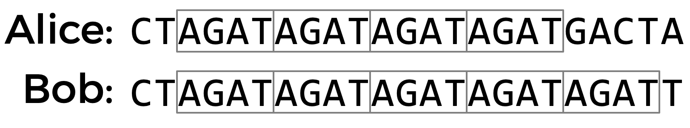

DNA
Problem to Solve
DNA, the carrier of genetic information in living things, has been used in criminal justice for decades. But how, exactly, does DNA profiling work? Given a sequence of DNA, how can forensic investigators identify to whom it belongs?
In a file called dna.py in a folder called dna, implement a program that identifies to whom a sequence of DNA belongs.
Demo
Distribution Code
For this problem, you’ll extend the functionality of code provided to you by CS50’s 工作人员.
下载 the distribution code
Log into cs50.dev, click on your terminal window, and execute cd by itself. You should find that your terminal window’s prompt resembles the below:
$
下一页 execute
wget https://cdn.cs50.net/2022/fall/psets/6/dna.zip
in order to 下载 a ZIP called dna.zip into your codespace.
Then execute
unzip dna.zip
to create a folder called dna. You no longer need the ZIP file, so you can execute
rm dna.zip
and respond with “y” followed by Enter at the prompt to remove the ZIP file you downloaded.
Now type
cd dna
followed by Enter to move yourself into (i.e., 打开) that directory. Your prompt should now resemble the below.
dna/ $
Execute ls by itself, and you should see a few files and folders:
databases/ dna.py sequences/
If you run into any trouble, follow these same steps again and see if you can determine where you went wrong!
背景
DNA is really just a sequence of molecules called nucleotides, arranged into a particular shape (a double helix). Every human cell has billions of nucleotides arranged in sequence. Each nucleotide of DNA contains one of four different bases: adenine (A), cytosine (C), guanine (G), or thymine (T). Some portions of this sequence (i.e., genome) are the same, or at least very similar, across almost all humans, but other portions of the sequence have a higher genetic diversity and thus vary 更多 across the population.
One place where DNA tends to have high genetic diversity is in Short Tandem Repeats (STRs). An STR is a short sequence of DNA bases that tends to repeat consecutively numerous times at specific locations inside of a person’s DNA. The number of times any particular STR repeats varies a lot among individuals. In the DNA samples below, for 示例, Alice has the STR AGAT repeated four times in her DNA, while Bob has the same STR repeated five times.

Using multiple STRs, rather than just one, can improve the accuracy of DNA profiling. If the probability that two people have the same number of repeats for a single STR is 5%, and the analyst looks at 10 different STRs, then the probability that two DNA samples match purely by chance is 关于 1 in 1 quadrillion (assuming all STRs are independent of each other). So if two DNA samples match in the number of repeats for each of the STRs, the analyst can be pretty confident they came from the same person. CODIS, the FBI’s DNA database, uses 20 different STRs as part of its DNA profiling process.
What might such a DNA database look like? Well, in its simplest form, you could imagine formatting a DNA database as a CSV file, wherein each row corresponds to an individual, and each column corresponds to a particular STR.
name,AGAT,AATG,TATC
Alice,28,42,14
Bob,17,22,19
Charlie,36,18,25
The data in the above file would suggest that Alice has the sequence AGAT repeated 28 times consecutively somewhere in her DNA, the sequence AATG repeated 42 times, and TATC repeated 14 times. Bob, meanwhile, has those same three STRs repeated 17 times, 22 times, and 19 times, respectively. And Charlie has those same three STRs repeated 36, 18, and 25 times, respectively.
So given a sequence of DNA, how might you identify to whom it belongs? Well, imagine that you looked through the DNA sequence for the longest consecutive sequence of repeated AGATs and found that the longest sequence was 17 repeats long. If you then found that the longest sequence of AATG is 22 repeats long, and the longest sequence of TATC is 19 repeats long, that would provide pretty good evidence that the DNA was Bob’s. Of 课程, it’s also possible that once you take the counts for each of the STRs, it doesn’t match anyone in your DNA database, in which case you have no match.
In practice, since analysts know on which chromosome and at which 地点 in the DNA an STR will be found, they can localize their 搜索 to just a narrow 小组课 of DNA. But we’ll ignore that detail for this problem.
Your task is to write a program that will take a sequence of DNA and a CSV file containing STR counts for a list of individuals and then output to whom the DNA (most likely) belongs.
规格说明
- The program should require as its first command-line argument the 姓名 of a CSV file containing the STR counts for a list of individuals and should require as its second command-line argument the 姓名 of a text file containing the DNA sequence to identify.
- If your program is executed with the incorrect number of command-line arguments, your program should print an error message of your choice (with
print). If the correct number of arguments are provided, you 五月 assume that the first argument is indeed the filename of a valid CSV file and that the second argument is the filename of a valid text file.
- If your program is executed with the incorrect number of command-line arguments, your program should print an error message of your choice (with
- Your program should 打开 the CSV file and 阅读 its 目录 into 内存.
- You 五月 assume that the first row of the CSV file will be the column names. The first column will be the word
nameand the remaining columns will be the STR sequences themselves.
- You 五月 assume that the first row of the CSV file will be the column names. The first column will be the word
- Your program should 打开 the DNA sequence and 阅读 its 目录 into 内存.
- For each of the STRs (from the first line of the CSV file), your program should compute the longest run of consecutive repeats of the STR in the DNA sequence to identify. Notice that we’ve defined a helper function for you,
longest_match, which will do just that! - If the STR counts match exactly with any of the individuals in the CSV file, your program should print out the 姓名 of the matching individual.
- You 五月 assume that the STR counts will not match 更多 than one individual.
- If the STR counts do not match exactly with any of the individuals in the CSV file, your program should print
No match.
提示
- You 五月 find Python’s
csvmodule helpful for reading CSV files into 内存. You 五月 want to take advantage of eithercsv.readerorcsv.DictReader. - The
openandreadfunctions 五月 prove useful for reading text files into 内存. - Consider what 数据结构 might be helpful for keeping tracking of information in your program. A
listor adict五月 prove useful. - Remember we’ve defined a function (
longest_match) that, given both a DNA sequence and an STR as inputs, returns the maximum number of times that the STR repeats. You can then use that function in other parts of your program!
Walkthrough
How to Test
While check50 is available for this problem, you’re encouraged to first test your code on your own for each of the following.
- Run your program as
python dna.py databases/small.csv sequences/1.txt. Your program should outputBob. - Run your program as
python dna.py databases/small.csv sequences/2.txt. Your program should outputNo match. - Run your program as
python dna.py databases/small.csv sequences/3.txt. Your program should outputNo match. - Run your program as
python dna.py databases/small.csv sequences/4.txt. Your program should outputAlice. - Run your program as
python dna.py databases/large.csv sequences/5.txt. Your program should outputLavender. - Run your program as
python dna.py databases/large.csv sequences/6.txt. Your program should outputLuna. - Run your program as
python dna.py databases/large.csv sequences/7.txt. Your program should outputRon. - Run your program as
python dna.py databases/large.csv sequences/8.txt. Your program should outputGinny. - Run your program as
python dna.py databases/large.csv sequences/9.txt. Your program should outputDraco. - Run your program as
python dna.py databases/large.csv sequences/10.txt. Your program should outputAlbus. - Run your program as
python dna.py databases/large.csv sequences/11.txt. Your program should outputHermione. - Run your program as
python dna.py databases/large.csv sequences/12.txt. Your program should outputLily. - Run your program as
python dna.py databases/large.csv sequences/13.txt. Your program should outputNo match. - Run your program as
python dna.py databases/large.csv sequences/14.txt. Your program should outputSeverus. - Run your program as
python dna.py databases/large.csv sequences/15.txt. Your program should outputSirius. - Run your program as
python dna.py databases/large.csv sequences/16.txt. Your program should outputNo match. - Run your program as
python dna.py databases/large.csv sequences/17.txt. Your program should outputHarry. - Run your program as
python dna.py databases/large.csv sequences/18.txt. Your program should outputNo match. - Run your program as
python dna.py databases/large.csv sequences/19.txt. Your program should outputFred. - Run your program as
python dna.py databases/large.csv sequences/20.txt. Your program should outputNo match.
Correctness
check50 cs50/problems/2023/summer/dna
Style
style50 dna.py
如何提交
Per Step 4 below, after you 提交, be sure to check your autograder results. If you see SUBMISSION ERROR: missing files (0.0/1.0), it means your file was not named exactly as prescribed (or you uploaded it to the wrong problem).
Correctness in submissions entails everything from reading the 规格说明, writing code that is compliant with it, and submitting files with the correct 姓名. If you see this error, you should resubmit right away, making sure your submission is fully compliant with the 规格说明. The 工作人员 will not adjust your filenames for you after the fact!
- 下载 your
dna.pyfile by control-clicking or right-clicking on the file in your codespace’s file browser and choosing 下载. - Go to CS50’s Gradescope page.
- Click 问题集 6: DNA.
- Drag and drop your
dna.pyfile to the area that says Drag & Drop. Be sure it has that exact filename! If you upload a file with a different 姓名, the autograder likely will fail when trying to run it. Ensuring you have uploaded files with the correct filename is your responsibility! - Click Upload.
You should see a message that says “问题集 6: DNA submitted successfully!”